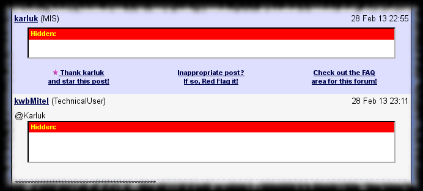
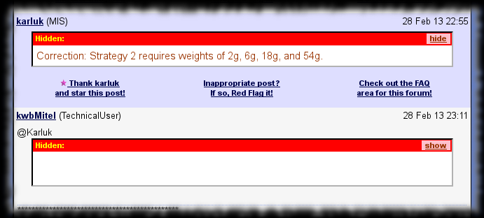

Tag :
TipMaster
TipMaster - Show/Hide Spoiler
Improves the TipMaster’s forums, Tek-Tips and Eng-Tips, by adding a link to each Spoiler and Hidden block to toggle its content’s visibility.
Personally I find the current method of selecting the text to make it visible uncomfortable.
Screenshot
sample rendering without TipMaster - Show/Hide Spoiler

sample rendering with TipMaster - Show/Hide Spoiler

Usage
You can click the link on the Spoiler or Hidden block’s title bar to toggle the visibility of the given block’ content.
Configuration
Configuration not really supported.
But you could improve the CSS used to highlight.
Versions
- 0.0 - March 2012
- Initial release.
Plans
- Add link to toggle all spoiler’s visibility.
Download
You can find the related files on GitHub in my Greasemonkey-script repository’s tipmaster-show-hide-spoiler directory :